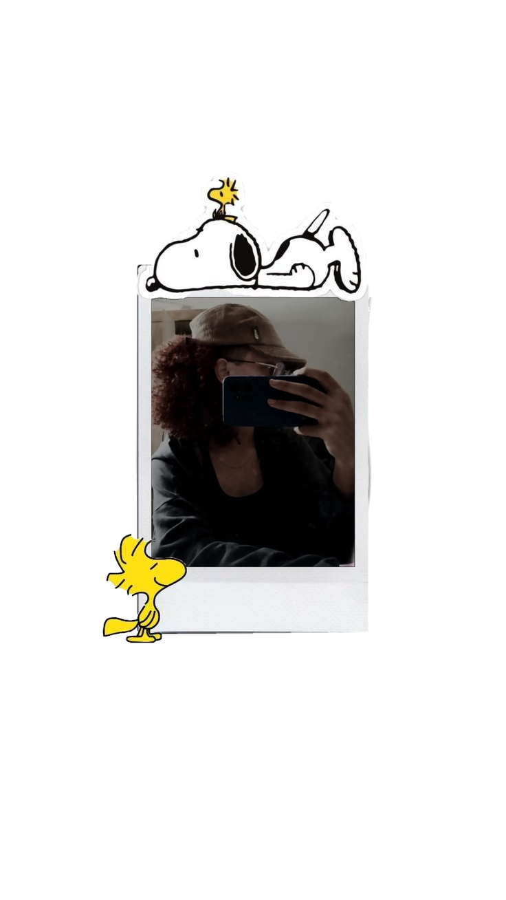
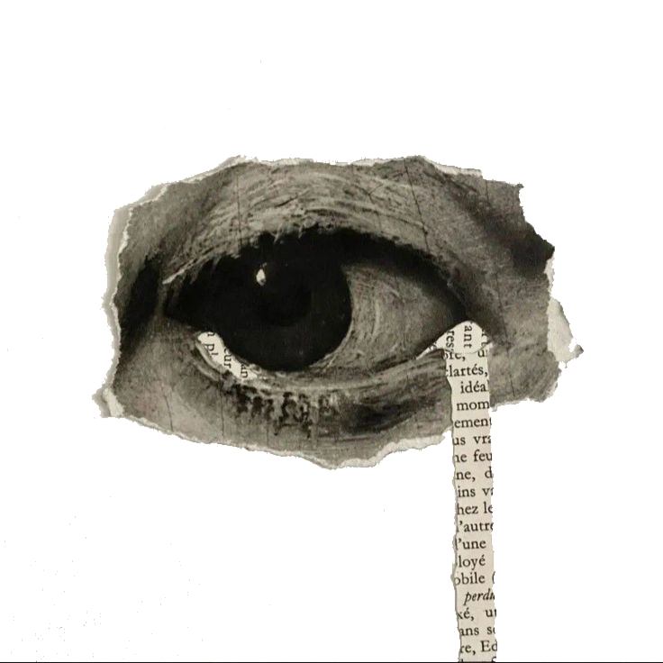
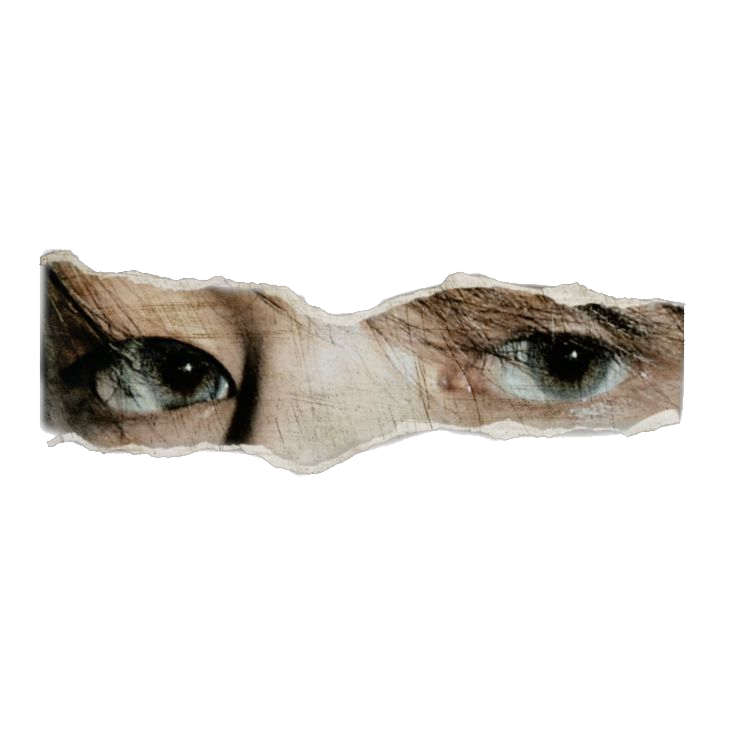
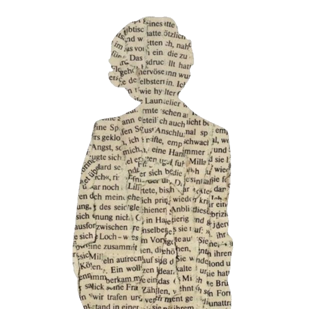
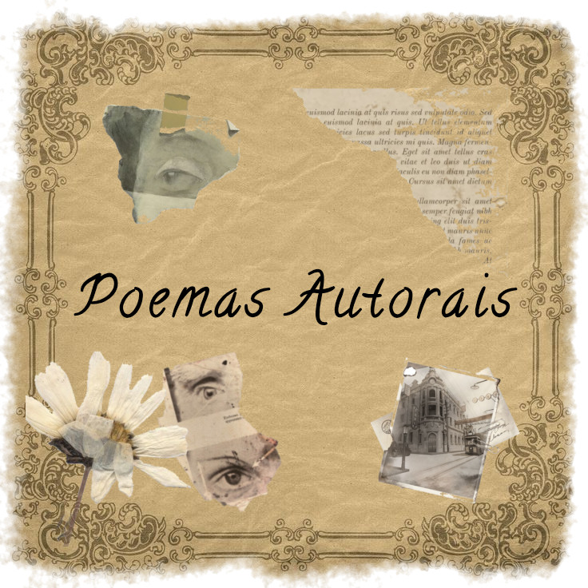
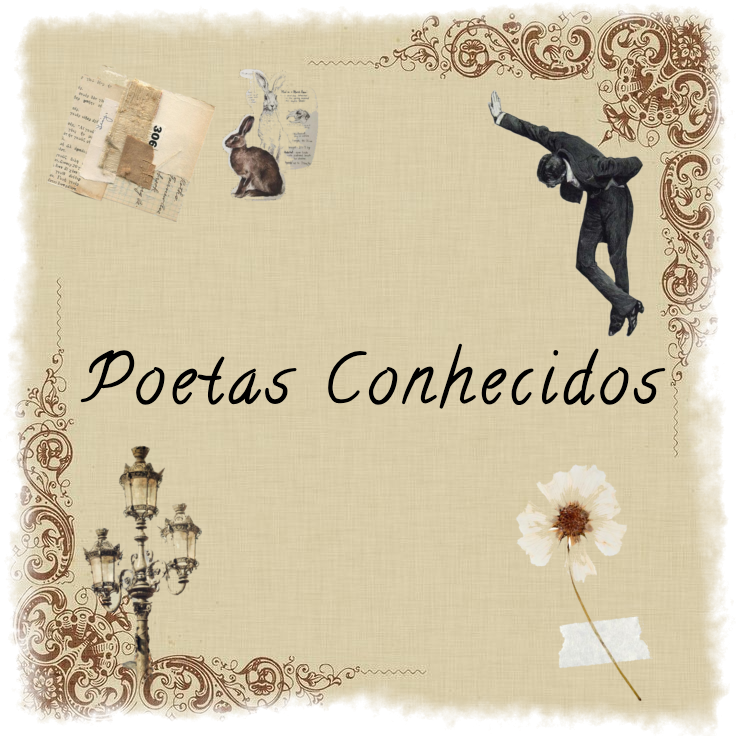

Poemas
palavras que habitam o tempo
palavras que habitam o tempo


poetisa
Esta poetisa escreve com toda a alma. Não é famosa, muito menos conhecida, mas ela carrega sonhos de ter uma vida tranquila, de ser conhecida pela sua arte, de publicar um livro com seus sentimentos antigos e atuais.
Cada poesia é um sentimento, uma experiência, um momento único da vida dela, e com estas simples poesias ela deseja conquistar o mundo que há dentro de si.





